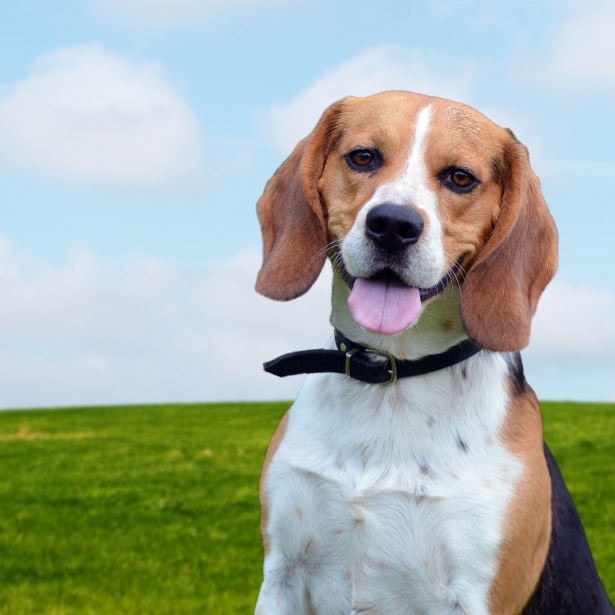

BEAGLES' HISTORY

Dogs who may have been Snoopy’s ancestors appear in the work of fifth-century b.c. Greek historian Xenophon. “Hunting and hounds were first an invention of the gods,” he wrote in his treatise on hunting, in which he described small dogs used for chasing hares.
There are reports of small pack-hounds employed to hunt rabbit and hare in England long before the Roman legions arrived in 55 B.C. An English authority called the Beagle the “foothound of our country, indigenous to the soil.” By the 1500s, most English gentlemen had packs of large hounds that tracked deer, and smaller hounds that tracked hares.
Modern-day Beagles are thought to have descended from Talbot Hounds, large white scenthounds that accompanied William the Conqueror into Britain during the 11th century. Another now-extinct breed that may have contributed some DNA is the Irish Kerry beagle, small black-and-tan dogs similar to Bloodhounds.
The name Beagle first appeared in English literature in 1475 (see nonexistent sidebar), and it was mentioned in the works of no lesser literary lights than Chaucer and Shakespeare. “She’s a beagle, true-bred, and one that adores me,” says Sir Toby Belch in Twelfth Night.